Contents
% Script to display the different superSegger methods
Get tryMe-file's location
FulllocationOfFile = mfilename('fullpath'); fileSepPosition = find(FulllocationOfFile==filesep,1,'last'); filepath = FulllocationOfFile ( 1 :fileSepPosition); dirname = [filepath,'60mrnaCropped'];
Sample phase and a fluorescence image
imageFolder = [dirname,filesep,'raw_im',filesep]; % finds all phase and fluorescence images phaseIm = dir([imageFolder,'*c1.tif']); fluorIm = dir([imageFolder,'*c2.tif']); % reads the first one phase = imread([imageFolder,phaseIm(1).name]); fluor = imread([imageFolder,fluorIm(1).name]); figure(1); clf; imshow(phase); figure(2); clf; imshow(fluor,[])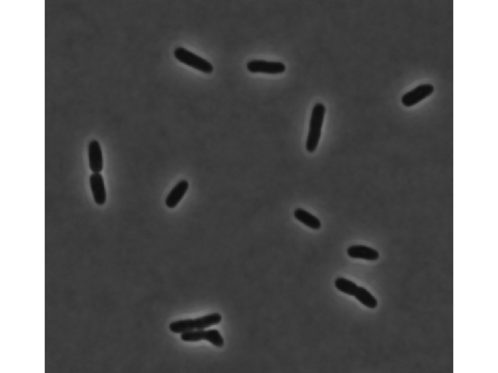 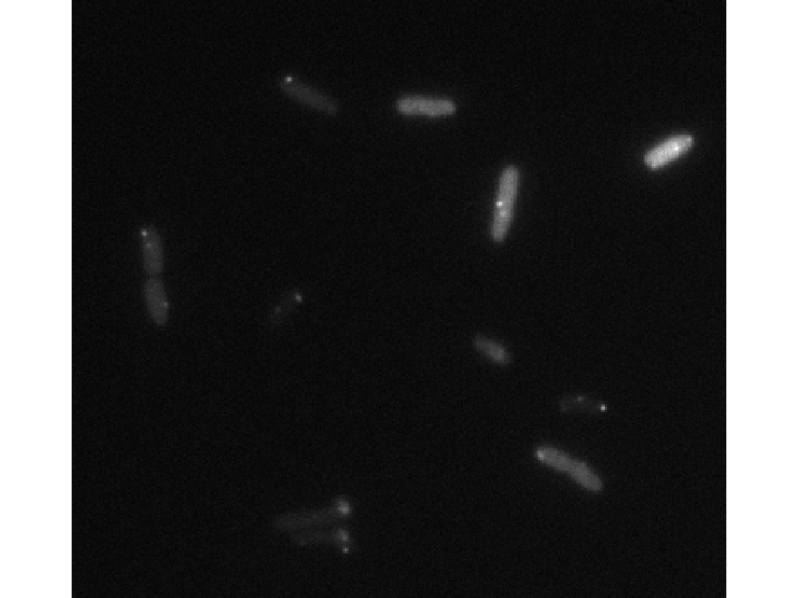
Different segmentation parameters
Try different constants to select the most appropriate one
tryDifferentConstants([dirname,'/raw_im/']);
Pick the first corner of the crop region. Pick the second corner of the crop region. Segmenting with 100XEc loading Constants : 100XEc.mat Segmenting with 100XPa loading Constants : 100XPa.mat Segmenting with 60XBay loading Constants : 60XBay.mat Segmenting with 60XCaulob loading Constants : 60XCaulob.mat Segmenting with 60XEc loading Constants : 60XEc.mat Segmenting with 60XEcLB loading Constants : 60XEcLB.mat Segmenting with 60XPa loading Constants : 60XPa.mat
 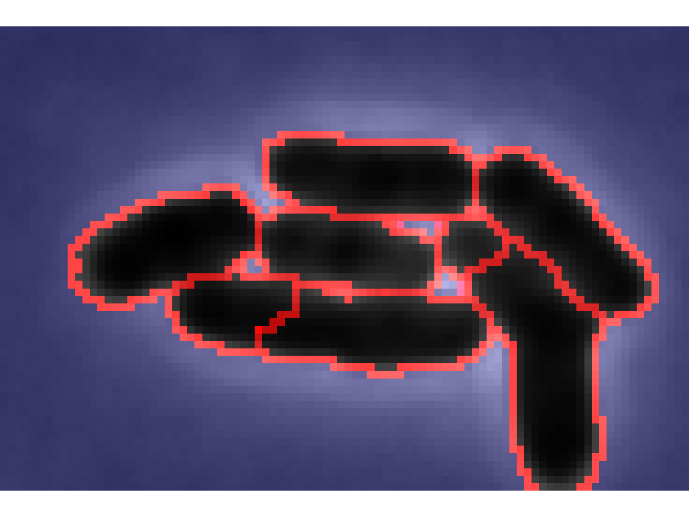 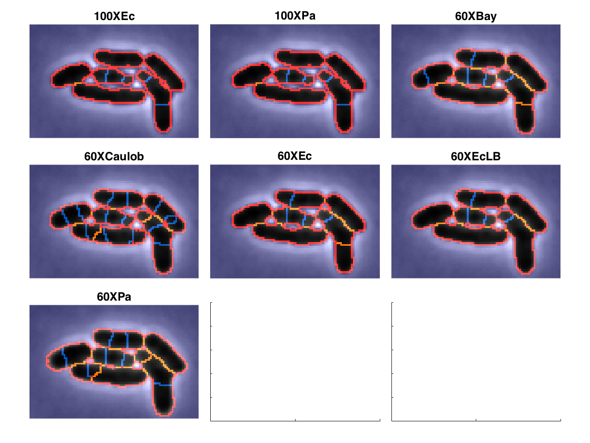
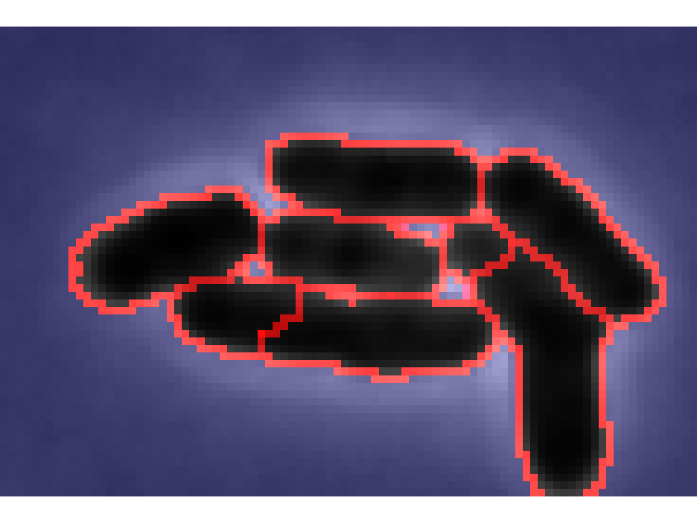 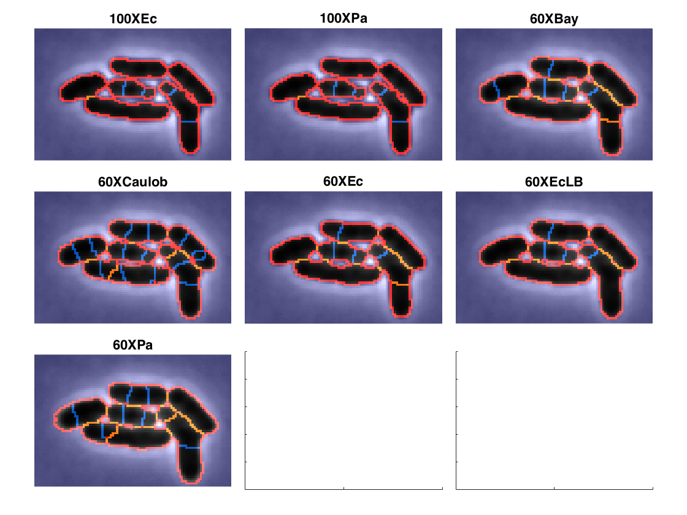 Set constants
Load the constants and set the desired values
CONST = loadConstants ('60XEclb',0); % fit up to 5 foci in each cell CONST.trackLoci.numSpots = [5]; % Max number of foci to fit in each fluorescence channel (default = [0 0]) % find the neighbors CONST.trackOpti.NEIGHBOR_FLAG = true; % not verbose state CONST.parallel.verbose = 0;
loading Constants : 60XEcLB.mat
Segment the data
Setting clean flag to true to resgment data
clean_flag = 1; close all; % close all figures BatchSuperSeggerOpti (dirname,1,clean_flag,CONST);
Clean flag is set to true. BatchSuperSeggerOpti : images already aligned xy1: BatchSuperSeggerOpti : Segmenting Cells xy1: trackOpti - Step 1: Running trackOptiStripSmall. xy1: trackOpti - Step 2: Running trackOptiLinkCell. xy1: ErRes: Frame: 4 already has an id 12 xy1: ErRes: Frame: 8 already has an id 7 xy1: ErRes: Frame: 9 already has an id 8 xy1: ErRes: Frame: 15 already has an id 8 xy1: ErRes: Frame: 15 already has an id 13 xy1: ErRes: Frame: 23 already has an id 11 xy1: ErRes: Frame: 37 already has an id 3 xy1: ErRes: Frame: 38 already has an id 19 xy1: ErRes: Frame: 41 already has an id 3 xy1: ErRes: Frame: 41 already has an id 17 xy1: ErRes: Frame: 46 already has an id 8 xy1: ErRes: Frame: 46 already has an id 8 xy1: ErRes: Frame: 48 already has an id 24 xy1: ErRes: Frame: 50 already has an id 12 xy1: ErRes: Frame: 53 already has an id 10 xy1: ErRes: Frame: 60 already has an id 12 xy1: ErRes: Frame: 60 already has an id 24 xy1: trackOpti - Step 3: Running trackOptiCellMarker. xy1: trackOpti - Step 4: Running trackOptiFluor. xy1: trackOpti - Step 5: Running trackOptiMakeCell. xy1: trackOpti - Step 6: Running trackOptiFindFoci. xy1: trackOpti - Step 7: Running trackOptiClist. xy1: trackOpti - Step 8: Running trackOptiCellFiles.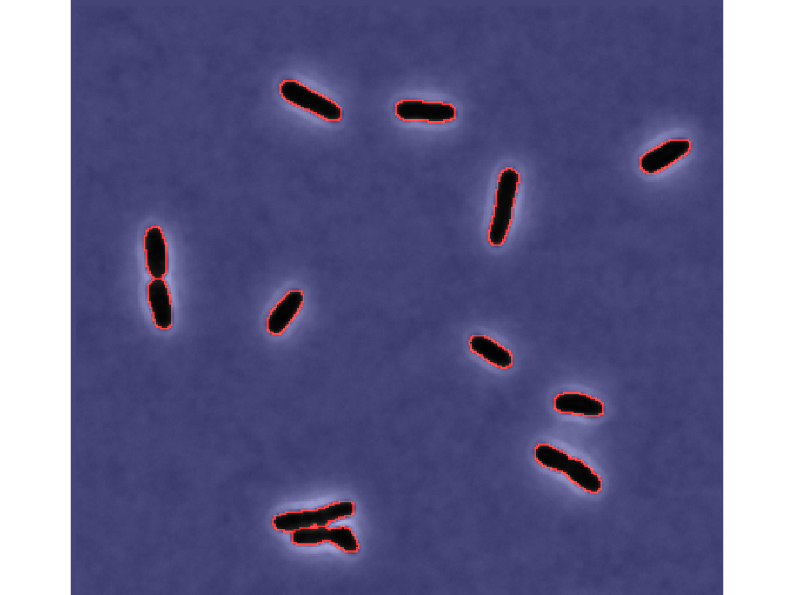
Load an individual cell file
cell_dir = [dirname,filesep,'xy1',filesep,'cell',filesep]; cellData = dir([cell_dir,'Cell*.mat']); data = load([cell_dir,cellData(1).name]);
Cell phase image
Show the phase image for frame 1
timeFrame = 1;
figure;
clf;
imshow(data.CellA{timeFrame}.phase,[]);

Cell Mask
Show the cell mask for frame 1
mask = data.CellA{timeFrame}.mask;
figure;
clf;
imshow(mask);
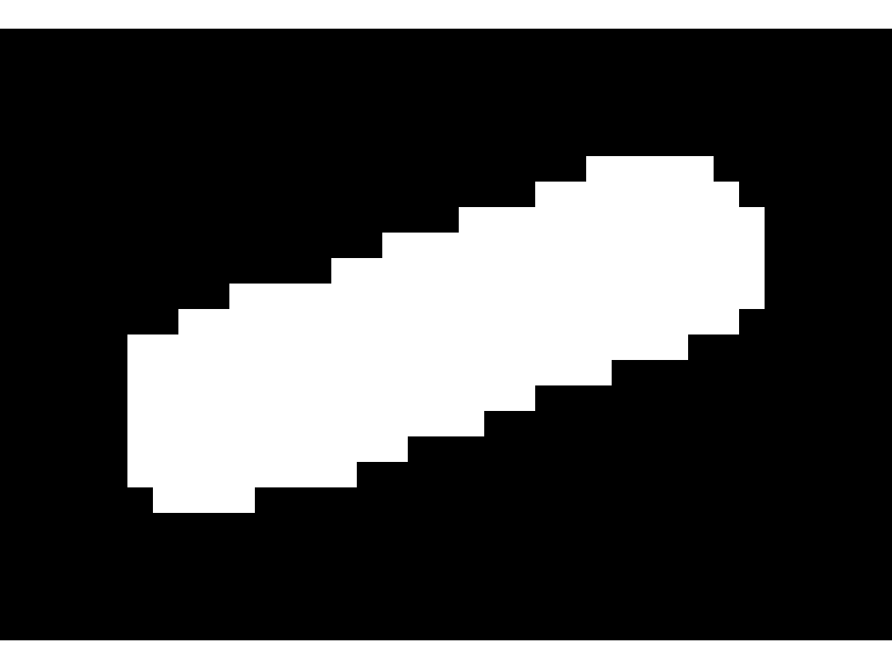 Fluorescence image
Show the fluorescence image for frame 1
figure;
clf;
imshow(cat(3,mask*0,ag(data.CellA{timeFrame}.fluor1),mask*0),[]);
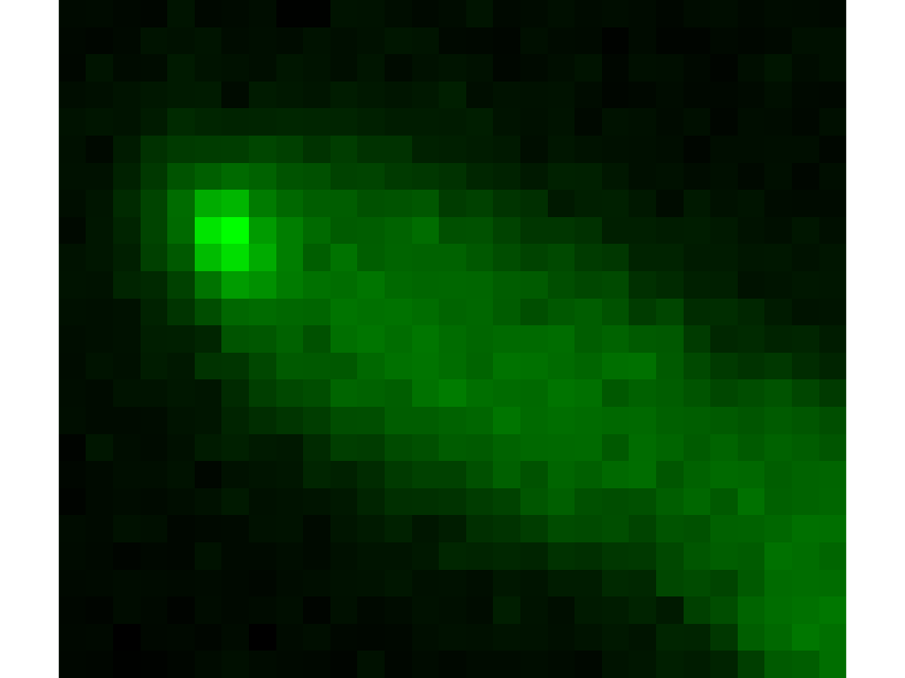 Cell tower
create a cell tower for the loaded cell.
im_tmp = makeFrameMosaic(data, CONST,3,1,3);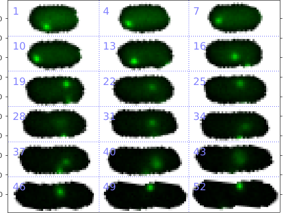
Kymograph
create a kymograph for the loaded cell.
makeKymographC(data,1,CONST,1);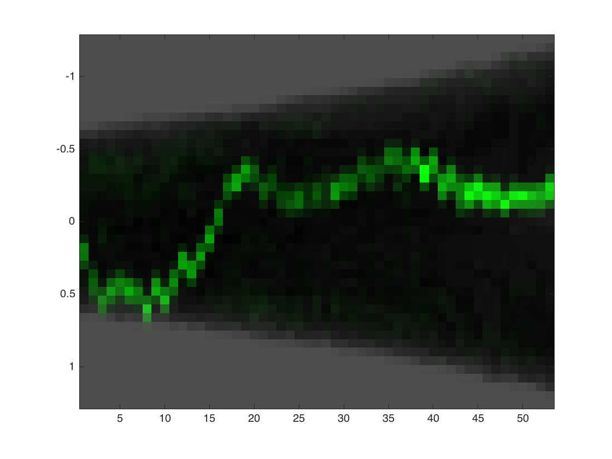
Clist
Load the clist
clist = load([dirname,'/xy1/clist.mat']);
Histogram
Plot the long axis at birth
clf; gateHist(clist,10);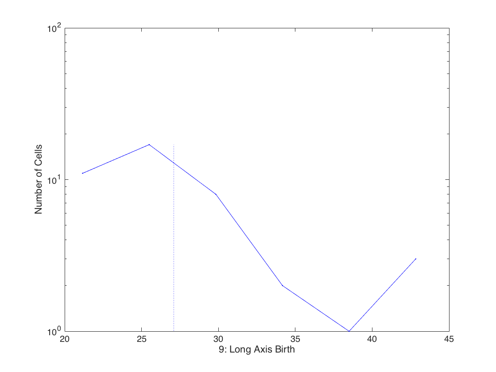
Gate and re-plot the histogram
Take only cells for which the birth was observed and display the long axis at birth.
% Gate on quantity (4) which is the birth frame % and take only values from 2 - 100, i.e. discard cells that were born % in the first frame. clistGated = gateMake(clist,4,[2 100]); % plotting for the gated clist the long axis at birth gateHist(clistGated,10);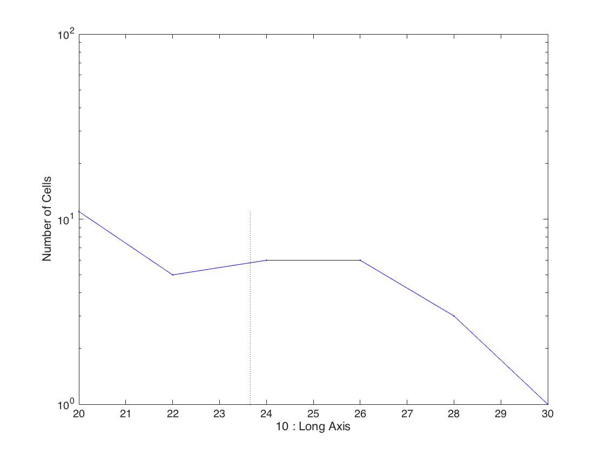